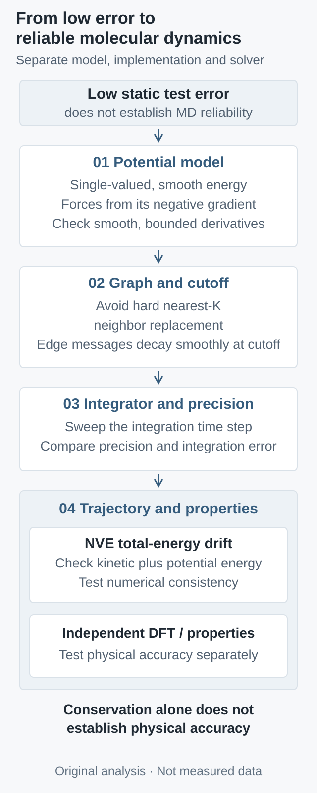

from torch.autograd import grad
R.requires_grad_(True)
E = energy_model(R, Z, cell) # one scalar per structure
F = -grad(E.sum(), R, create_graph=training)[0]
# During training, force loss must backpropagate through F.
# During MD, keep coordinate gradients enabled; detach between steps.
Why can molecular dynamics drift despite low force error? Conservative forces, smooth cutoffs, and time steps through eSEN
Checkable loop-work, cutoff-derivative, and Verlet oscillator examples separate the potential, computation, and integrator. Includes executed synthetic checks and a proposed protocol for real models.
If an interatomic model predicts forces more accurately on a test set, is it necessarily better for molecular dynamics? The ICML 2025 eSEN paper supplies a counterexample. In Table 1, the direct-force variant has an MPTrj force MAE of 43.62, versus 43.96 for baseline eSEN, both in \(\mathrm{meV}/\text{Å}\). Yet the former shows pronounced energy drift in the paper's specified NVE tests. This comparison does not make every direct-force model unusable; it shows that static error does not test every structure required by dynamics.
This is an analysis of a foundational report whose preprint first appeared on February 17, 2025, not a new release today. Starting from its question, hand-checkable examples separate three issues: consistency between forces and one energy function, smoothness of the implemented computation, and an appropriate integration time step. Actual synthetic checks and a proposed acceptance protocol follow. The synthetic results are not an eSEN or DFT reproduction.
1. What is conserved: total energy, not potential energy
Let \(R\in\mathbb R^{N\times3}\) denote atomic coordinates, \(Z\) fixed element identities, and \(L\) a fixed cell; other electronic-state conditions are also fixed. The model outputs scalar potential energy \(E_\theta(R;Z,L)\). Consider classical dynamics without external driving, a thermostat, or constraint forces, with constant masses \(m_i\) and sufficiently smooth energy in the region visited. Kinetic and potential energy can continually exchange. NVE preserves their sum:
The same energy function must appear on both sides. If an interface reports one energy head but advances coordinates using an unconstrained, separate force head, its logged “total energy” need not correspond to the equation being integrated. Even when the identity holds, it preserves the model's own \(H_\theta\): an incorrect but smooth potential can produce a numerically stable, incorrect trajectory. Conservation and agreement with reference physics are separate acceptance criteria.
2. A small force error can leave nonzero work around a closed path
Consider a dimensionless example with two generalized coordinates. It tests a mathematical mechanism, not a real material model satisfying every atomic symmetry. The baseline energy is \(E_0(x,y)=(x^2+y^2)/2\), with force \(F_0=(-x,-y)\). Add a small rotational component:
On the unit circle, the Euclidean norm of the force error is exactly \(|\varepsilon|\), which can be arbitrarily small. But along the counterclockwise unit circle \(r(t)=(\cos t,\sin t)\), its work is:
The conservative baseline contributes no net work around the loop, whereas the rotational error continually contributes along its direction. Repeating this prescribed path in the same direction accumulates work. This is a path integral, not a claim that unconstrained dynamics must follow the unit circle. It is enough to show that small pointwise error does not imply a globally single-valued potential.
The issue is also visible locally. Smooth gradient forces require a symmetric Jacobian, while this field satisfies:
Centered cross-derivative differences and small closed-loop integrals are therefore useful debugging probes. Passing finitely many probes does not prove conservation throughout configuration space; discontinuities and topology require separate attention. Rotational equivariance cannot replace the condition either: transformation under rotation and existence of a potential are different questions.
3. A negative gradient still requires smooth cutoffs and neighbor changes
Automatic differentiation differentiates the computation actually executed. If neighbor selection abruptly switches branches, correct gradients inside each branch do not repair the boundary. A hard nearest-neighbor count deserves scrutiny: when neighbors \(K\) and \(K+1\) exchange rank, their species, directions, and messages may differ, so an arbitrarily small coordinate change can replace a finite contribution. If the cap is never reached, this mechanism does not occur; a numeric cap in a configuration alone is not proof of failure.
A distance cutoff presents a separate issue. Setting a nonzero interaction directly to zero outside \(r_c\) introduces a discontinuity. To see what a repair entails, choose \(r_{\mathrm{on}}<r_c\), define \(s=(r-r_{\mathrm{on}})/(r_c-r_{\mathrm{on}})\), and use this teaching switching function:
Its first and second derivatives vanish at both endpoints, so the constant extension is \(C^2\). But its interior third derivative is \(-60\) at both ends, while the exterior value is zero. It is therefore not \(C^3\), much less infinitely smooth. This is our checkable example, not the official eSEN envelope, and it does not establish smoothness of an entire network.
For a radial energy term \(E(r)=c(s)\phi(r)\), the generalized radial force in the transition region is:
The second term cannot be omitted. Computing an original force and then multiplying it by a cutoff is generally different from differentiating the complete cutoff-modified energy. In message-passing models, normalization, gates, neighbor caches, and all branches must also allow an edge's contribution to vanish as intended. Multiplying by one smooth function is not a proof about the whole computation.
The eSEN design ablations provide practical examples, comparing direct-force, neighbor-limit, and no-envelope variants. They motivate the diagnostic sequence here; a particular variant drifting under a particular test is not promoted into an architectural theorem for every graph network.

Original analytical framework, not measured data or a reproduction of the paper's architecture. NVE consistency and independent property accuracy require separate checks; time-step and precision scans are proposed diagnostics.
4. Smooth conservative forces do not freeze discrete-time energy
The ASE NVE documentation emphasizes time-step selection. Its VelocityVerlet implementation applies a half momentum step, a full coordinate step, and a second half momentum step. For the unconstrained setting considered here, with time step \(h\), this becomes:
Here \(M\) is the diagonal mass matrix for flattened coordinates. Caching the previous force requires only one force evaluation at a new configuration per step after initialization. Constraints, variable cells, and stochastic heat baths are outside this simplified update and cannot be silently included.
The simplest check is a one-dimensional harmonic oscillator with dimensionless \(m=\omega=1\), \(q_0=1\), and \(v_0=0\), so \(F(q)=-q\). Combining the steps yields a linear update:
The matrix has determinant one. For \(0<h<2\), its eigenvalues lie on the unit circle. With \(\vartheta=2\arcsin(h/2)\), the initial conditions give the directly verifiable solution:
The physically defined total energy exhibits bounded oscillations of amplitude at most \(h^2/8\), rather than remaining exactly constant at each step. This special update also preserves a modified quadratic form exactly; that does not give every general potential an equally simple exact invariant. Beyond the \(h=2\) stability boundary, even perfectly correct conservative forces can produce divergence.
Two distinctions follow: bounded oscillation differs from secular drift, and improvement from a smaller step does not establish physical accuracy of the potential. High-frequency vibrations, short-range repulsion, floating-point rounding, and nonsmooth operations change usable steps in real systems. The dimensionless “2” here cannot be converted into a universal femtosecond recommendation.
5. Implementation and cost per unit of simulated time
A minimal auditable implementation keeps coordinate gradients, predicts scalar energy per structure, and obtains forces from that same energy. The following is interface pseudocode, not a neural-network training run performed here:
from torch.autograd import grad
R.requires_grad_(True)
E = energy_model(R, Z, cell) # one scalar per structure
F = -grad(E.sum(), R, create_graph=training)[0]
# During training, force loss must backpropagate through F.
# During MD, keep coordinate gradients enabled; detach between steps.
One reverse pass from scalar energy provides all coordinate gradients; a separate reverse pass per coordinate is unnecessary. Training on force loss differentiates through the energy's coordinate derivative, involving mixed second derivatives. Detaching early merely to save memory changes the objective. Inference need not retain a training graph across time steps, but the calculation used to obtain forces cannot run entirely with gradients disabled.
With \(L_{\mathrm{msg}}\) short-range message-passing layers, average degree \(z\), and fixed feature dimensions, message computation scales with \(L_{\mathrm{msg}}Nz\). Graph construction, reverse differentiation for forces, stored activations, and device communication add costs. At fixed density and cutoff, \(z\) may be approximately constant; high density, expanded cutoffs, and fully connected graphs violate that simplification. No unmeasured speed multiplier is claimed here.
The more direct budget is cost per unit of simulated time. If a force evaluation takes \(C_F\) and a trajectory lasts \(T\), the leading cost is approximately \(C_FT/h\). Over the same \(T\), testing \(h,h/2,h/4\) takes roughly \(1+2+4=7\) times the force calls of one baseline trajectory, not three times. A model with faster force calls may still be more expensive if it requires a much smaller step. Report graph-inclusive time, peak memory, atom count, hardware, precision, and the step that passes acceptance together.
6. What was actually run for this article
Download the standard-library Python check script and run python3 smooth_potential_checks.py. It passed on Python 3.12.14 on macOS arm64 and was independently reviewed and rerun. It uses double-precision floating point and exact fractions, without model weights, DFT labels, real-material MD, or GPU-throughput measurements.
For the loop example, \(\varepsilon=0.01\). Analytic counterclockwise unit-circle work is \(0.0628318531\); the actual 512-sided polygon result is \(0.0628302760\). Segmentwise exact integration converges to the circle as the polygon is refined, reverse traversal flips its sign, and the \(\varepsilon=0\) negative control gives zero work. “Segmentwise exact” refers to midpoint integration of a linear field on each straight segment, not the absence of floating-point rounding.
Exact fractions check cutoff endpoints and derivatives, confirming only \(C^2\) regularity after constant extension. The oscillator uses the same total time \(T=100\) for each run, producing the measured values below. Every quantity is dimensionless. A finite sampled maximum approaches the analytic envelope; it is not asserted to equal it exactly.
Time step \(h\)
Steps
Measured \(\max_n|H_n-H_0|\)
0.2
500
0.004999908448
0.1
1,000
0.001249995281
0.05
2,000
0.0003124999937
0.025
4,000
0.00007812499989
Halving the step reduces error by approximately a factor of four, consistent with this oscillator's second-order envelope. A separate negative control uses \(h=2.1\) for 100 steps and triggers the prespecified failure condition of energy error exceeding one. These checks validate loop work, cutoff regularity, and the integration mechanism. They do not test real neighbor lists or prove long-time stability of arbitrary neural potentials.
7. Accepting real models without being misled by attractive curves
First freeze the physical problem: electronic-structure reference method, elements and charge/spin conditions, cell, units, initial configurations, masses, and velocities. Avoid distributing adjacent trajectory frames randomly between training and test sets. Separate materials, molecular families, or complete trajectories, and keep the development set used to select cutoffs, steps, and precision distinct from final acceptance data.
Then diagnose by layer. First compare finite differences with automatic energy gradients and probe direct-force interfaces with small loops. Scan finite-difference spacing too: too small amplifies rounding, while too large introduces truncation error. Second move atoms slowly across cutoff and neighbor-ranking boundaries, looking for jumps in energy, force, and required derivative orders. Third scan time steps over identical physical durations and initial conditions in NVE without a thermostat, then compare numerical precision. Eliminate implementation errors before deciding to change the model.
Report per-atom energy-offset traces, maximum absolute offsets, fitted drift slopes, and failed-trajectory fractions, with time intervals and units. A maximum offset may have units of energy per atom; a slope has energy per atom per time. They are not interchangeable. These are proposed reporting conventions, not a claim about the exact definition used in eSEN's plotted error. Endpoint differences can land on the same oscillation phase, while averages can hide a small number of failed trajectories.
After numerical consistency passes, test forces, energy differences, phonons, or target properties against independent references. Temperature control can hide energy injection, so stable NVT temperature does not replace NVE diagnostics. Conversely, instantaneous temperature changes from kinetic/potential exchange in NVE are not automatically failures. For derivative-sensitive tasks such as phonons, scan displacement sizes to separate model errors from finite-difference errors.
Keep two distinct scorecards: whether the model stably integrates its own dynamics at acceptable cost, and whether those dynamics approximate the intended system. If a conservative, stable model misses reference properties, examine training coverage, electronic-structure labels, and representation. If static error is low but trajectories drift, examine gradient consistency, computational boundaries, and integration settings. Locating a failure in a testable component is more useful than adding another aggregate error metric.